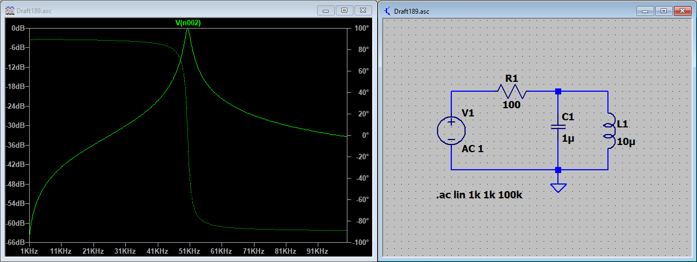
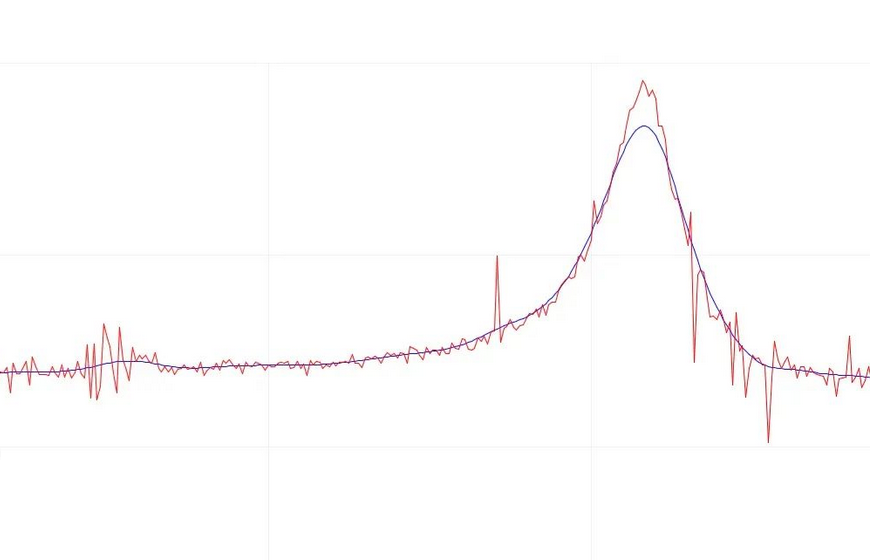
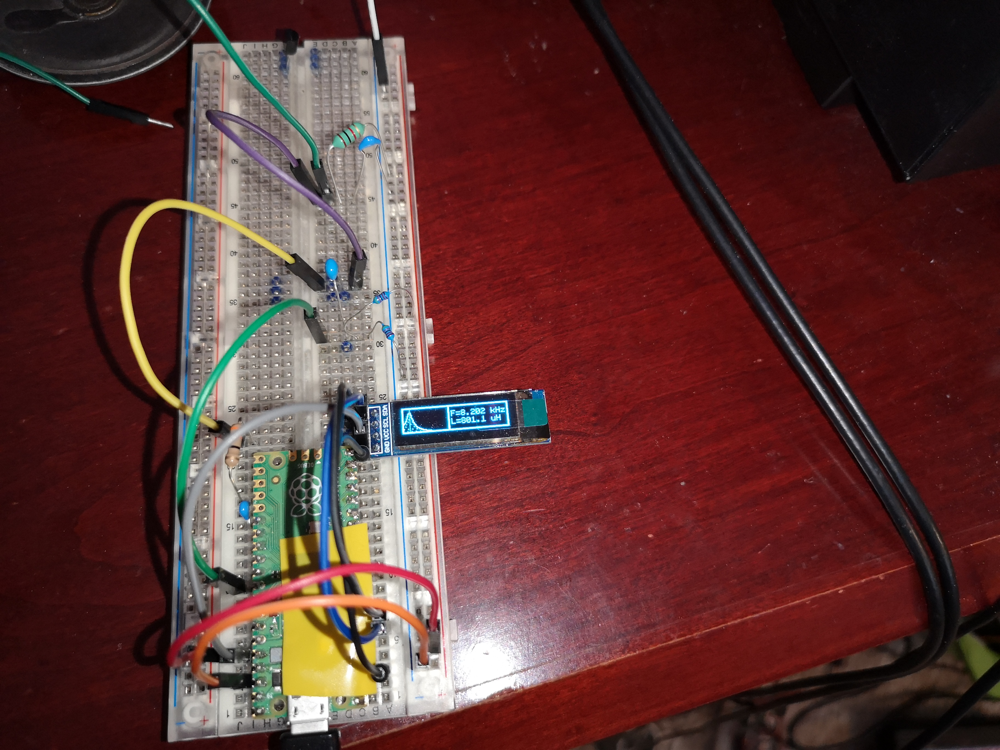
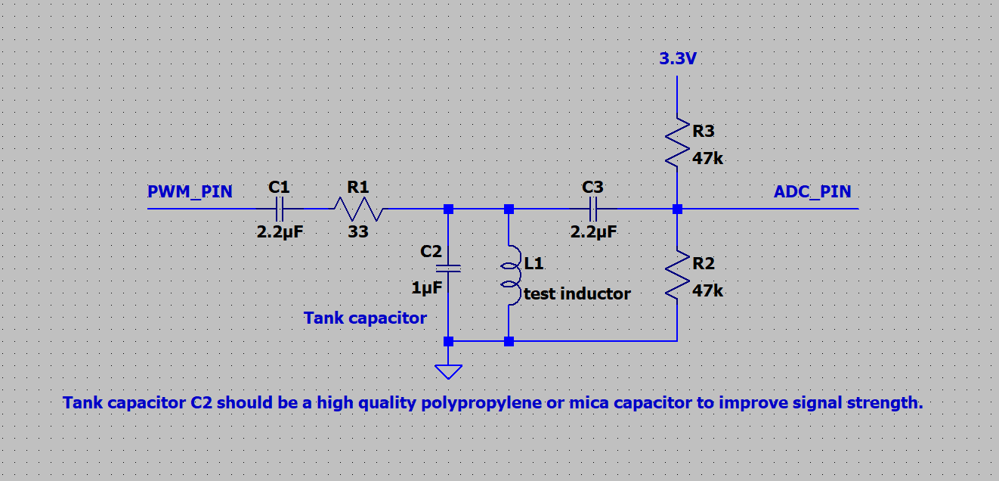
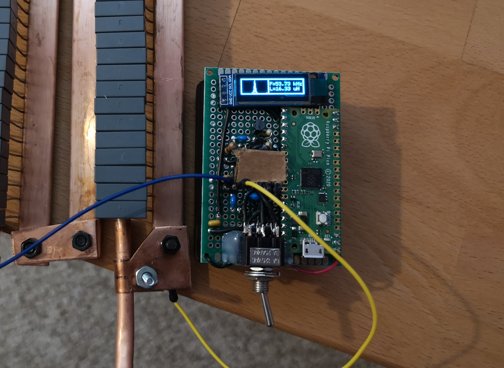

June 3, 2022
Inductors are quite useful. In short, an inductor ensures that the time derivative of the current running through it is proportional to the voltage across it, with the formula V = LdI/dt. In practice, they are often used for filtering purposes, being part of transformers, and resonant applications.
A typical multimeter will be able to measure voltage, current, resistance, and some other, and some meters can also measure capacitance. While many multimeters are able to measure inductance, these can be more expensive.
These meters typically work by running an alternating current through the inductor, measuring the impedance, and then comparing that to the DC resistance. The inductance can then be calculated by the formula X = 2*pi*f*L.
While this is straightforward for a multimeter to do, this method is sort of finicky to do using something like a microcontroller. Firstly, an accurate and clean AC sine wave must be generated, and then it must be accurately measured to obtain an accurate reading. While this is definitely doable, in my opinion it is not the easiest method.
An inductor combined with a capacitor forms an LC tank circuit that will oscillate when excited by its resonant frequency, equal to f = 1/(2*pi*sqrt(L*C)). Thus, if the capacitance and resonant frequency is known, the inductance can be calculated.
The benefit of this method is that it can relatively accurately measure inductance without needing to generate a pure sine wave, in addition to measuring the precise voltage of an AC signal. There are drawbacks however, including that it requires a microcontroller with a fast analog to digital converter, since it needs to sample the waveform of the oscillations. It also requires precise resonant capacitors, which directly impact the accuracy of the measurement. Also, relevant for some core materials, the meter measures different inductances at different frequencies, which may impact accuracy for some ferrite cores.
As shown in this LTSpice simulation, the voltage across a parallel LC circuit being excited by an AC source will peak when the frequency of the source matches the resonant frequency of the LC circuit.
My idea of the inductance meter is as follows. A microcontroller would generate a square wave of a particular frequency, and this would excite the LC circuit through a resistor. Then, using one of the microcontroller's ADC pins, it would rapidly sample the voltage across the LC circuit. It would do this for a few hundred samples, storing the values in a buffer in memory. It would then run essentially a single "slice" of a discrete Fourier transform, the frequency corresponding to the generated square wave frequency. This would then be repeated for an entire spectrum of frequencies.
The spectrum of measured amplitudes would be plotted on a graphical display, and the frequency with the highest magnitude would then be used to calculate the inductance. The display does not "need" to display the measured amplitude graph, since it does not give much useful information, but I chose to display it anyways as a form of validation for the output numbers. If the graph had a distinct bump at a plausible frequency, then one could assume that the output was likely to be mostly correct.
The reason for using a single slice of Fourier transform instead of just measuring the amplitude, is that it cuts out the effects of the harmonic frequencies from the square wave. If it was not used, the square wave would likely cause the LC circuit to resonate when its component frequencies matched the resonant frequency, thus giving false readings.
Using the Arduino serial plotter as a display, the bump at resonance can be clearly seen. I had some problems with the output values having a lot of noise, which I couldn't really fix. I used a moving average method to smooth the graph, resulting in the smoother version of the graph.
I used a SSD1306 OLED display, since it was about the right size and had good contrast. For the microcontroller, the RP2040 was a suitable choice. It has an okay-ish ADC, 12 bit at 500k samples per second, allowing for a bit less than 250kHz signals. As for the CPU cores, while they don't have floating point units, firstly, there are two of them, and secondly, they can be overclocked to over 400MHz, which significantly increases their processing power.
The relevant part of the schematic looked something like this. The only major difference is that instead of connecting the square wave GPIO pin directly, I ended up using a push pull pair of transistors to make the signal a bit "stronger".
I then soldered the circuit into some perfboard. This particular device looks incredibly bad, but it does what it is supposed to do. I ended up adding a 4.5V battery pack, as well as a range selector switch, which basically switches the resistor and tank capacitor for some different ones, as well as changing the state on a microcontroller pin so that it knows to switch the range.
Ultimately, the meter works fine for giving ballpark measurements about inductance, with a range of about 4uH to over 10mH. In hindsight, I should have spent a few dollars more on some more accurate tank capacitors, since the capacitors I used were cheap ceramics that likely had a tolerance of maybe 20%, as well as probably being frequency dependant to some extent.